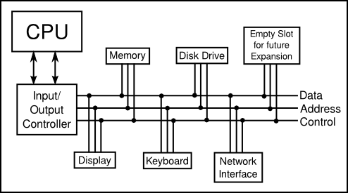

Asynchronous Events
The CPU spends almost all of its time fetching instructions from memory and executing them. However, the CPU and main memory are only two out of many components in a real computer system.
The list of devices is entirely open ended, and computer systems are built
so that they can easily be expanded by adding new devices. Somehow the CPU has
to communicate with and control all these devices. The CPU can only do this by
executing machine language instructions (which is all it can do, period). The
way this works is that for each device in a system, there is a
device driver, which consists of software that the CPU
executes when it has to deal with the device. Installing a new device on a
system generally has two steps: plugging the device physically into the
computer, and installing the device driver software. Without the device driver,
the actual physical device would be useless, since the CPU would not be able to
communicate with it.
Buses and Interrupts
A computer system consisting of many devices is typically organized by
connecting those devices to one or more busses. A
bus is a set of wires that carry various sorts of information between the
devices connected to those wires. The wires carry data, addresses, and control
signals. An address directs the data to a particular device and perhaps to a
particular register or location within that device. Control signals can be
used, for example, by one device to alert another that data is available for it
on the data bus. A fairly simple computer system might be organized like
this:

Now, devices such as keyboard, mouse, and network interface can produce
input that needs to be processed by the CPU. How does the CPU know that the
data is there? One simple idea, which turns out to be not very satisfactory, is
for the CPU to keep checking for incoming data over and over. Whenever it finds
data, it processes it. This method is called polling,
since the CPU polls the input devices continually to
see whether they have any input data to report. Unfortunately, although polling
is very simple, it is also very inefficient. The CPU can waste an awful lot of
time just waiting for input.
To avoid this inefficiency, interrupts are
generally used instead of polling. An interrupt is a signal sent by another device
to the CPU. The CPU responds to an interrupt signal by putting aside whatever
it is doing in order to respond to the interrupt. Once it has handled the
interrupt, it returns to what it was doing before the interrupt occurred. For
example, when you press a key on your computer keyboard, a keyboard interrupt
is sent to the CPU. The CPU responds to this signal by interrupting what it is
doing, reading the key that you pressed, processing it, and then returning to
the task it was performing before you pressed the key.
Again, you should understand that this is a purely mechanical process: A
device signals an interrupt simply by turning on a wire. The CPU is built so
that when that wire is turned on, the CPU saves enough information about what it is
currently doing so that it can return to the same state later. This information
consists of the contents of important internal registers such as the program
counter. Then the CPU jumps to some predetermined memory location and begins
executing the instructions stored there. Those instructions make up an
interrupt handler that does the processing
necessary to respond to the interrupt. (This interrupt handler is part of the
device driver software for the device that signaled the interrupt.) At the end
of the interrupt handler is an instruction that tells the CPU to jump back to
what it was doing; it does that by restoring its previously saved state.
Interrupts allow the CPU to deal with asynchronous events.
In the regular fetch-and-execute cycle, things happen in a
predetermined order; everything that happens is "synchronized" with everything
else. Interrupts make it possible for the CPU to deal efficiently with events
that happen "asynchronously," that is, at unpredictable times.
As another example of how interrupts are used, consider what happens when the CPU needs to access data that is stored on a hard disk. The CPU can access data directly only if it is in main memory. Data on the disk has to be copied into memory before it can be accessed. Unfortunately, on the scale of speed at which the CPU operates, the disk drive is extremely slow. When the CPU needs data from the disk, it sends a signal to the disk drive telling it to locate the data and get it ready. (This signal is sent synchronously, under the control of a regular program.) Then, instead of just waiting the long and unpredictable amount of time that the disk drive will take to do this, the CPU goes on with some other task. When the disk drive has the data ready, it sends an interrupt signal to the CPU. The interrupt handler can then read the requested data.
Multitasking
Now, you might have noticed that all this only makes sense if the CPU
actually has several tasks to perform. If it has nothing better to do, it might
as well spend its time polling for input or waiting for disk drive operations
to complete. All modern computers use multitasking
to perform several tasks at once. Some computers can be used by several people
at once. Since the CPU is so fast, it can quickly switch its attention from one
user to another, devoting a fraction of a second to each user in turn. This
application of multitasking is called timesharing.
But a modern personal computer with just a single user also uses multitasking. For
example, the user might be typing a paper while a clock is continuously
displaying the time and a file is being downloaded over the network.
Each of the individual tasks that the CPU is working on is called a
thread. (Or a process;
there are technical differences between threads and
processes, but they are not important here, since it is threads that
are used in Java.) Many CPUs can literally execute more than one thread
simultaneously—such CPUs contain multiple "cores," each of which can
run a thread—but there is always a limit on the number of threads
that can be executed at the same time. Since there are often more threads
than can be executed simultaneously, the computer has to be able switch its
attention from one thread to another, just as a timesharing computer
switches its attention from one user to another. In general, a
thread that is being executed will continue to run
until one of several things happens:
- The thread might voluntarily
yieldcontrol, to give other threads a chance to run. - The thread might have to wait for some asynchronous event to occur. For
example, the thread might request some data from the disk drive, or it might
wait for the user to press a key. While it is waiting, the thread is said to be
blocked, and other threads, if any, have a chance to run. When the event occurs, an interrupt will "wake up" the thread so that it can continue running. - The thread might use up its allotted slice of time and be suspended to
allow other threads to run. Most computers can "forcibly" suspend a thread
in this way; computers that can do that are said to use
preemptive multitasking. To do preemptive multitasking, a computer needs a special timer device that generates an interrupt at regular intervals, such as 100 times per second. When a timer interrupt occurs, the CPU has a chance to switch from one thread to another, whether the thread that is currently running likes it or not. All modern desktop and laptop computers, and even typical smartphones and tablets, use preemptive multitasking.
Ordinary users, and indeed ordinary programmers, have no need to deal with interrupts and interrupt handlers. They can concentrate on the different tasks that they want the computer to perform; the details of how the computer manages to get all those tasks done are not important to them. In fact, most users, and many programmers, can ignore threads and multitasking altogether. However, threads have become increasingly important as computers have become more powerful and as they have begun to make more use of multitasking and multiprocessing. In fact, the ability to work with threads is fast becoming an essential job skill for programmers. Fortunately, Java has good support for threads, which are built into the Java programming language as a fundamental programming concept. Programming with threads will be covered in Chapter 12.
Just as important in Java and in modern programming in general is the basic
concept of asynchronous events. While programmers don't actually deal with
interrupts directly, they do often find themselves writing event handlers,
which, like interrupt handlers, are called
asynchronously when specific events occur. Such "event-driven programming" has
a very different feel from the more traditional straight-through, synchronous
programming. We will begin with the more traditional type of programming, which
is still used for programming individual tasks, but we will return to threads
and events later in the text, starting in Chapter 6
Operating Systems
By the way, the software that does all the interrupt handling, handles
communication with the user and with hardware devices, and controls which thread
is allowed to run is called the
operating system. The operating system is the
basic, essential software without which a computer would not be able to
function. Other programs, such as word processors and Web browsers,
are dependent upon the operating system. Common desktop operating systems include
Linux, various versions of Windows, and MacOS. Operating systems
for smartphones and tablets include Android and iOS.